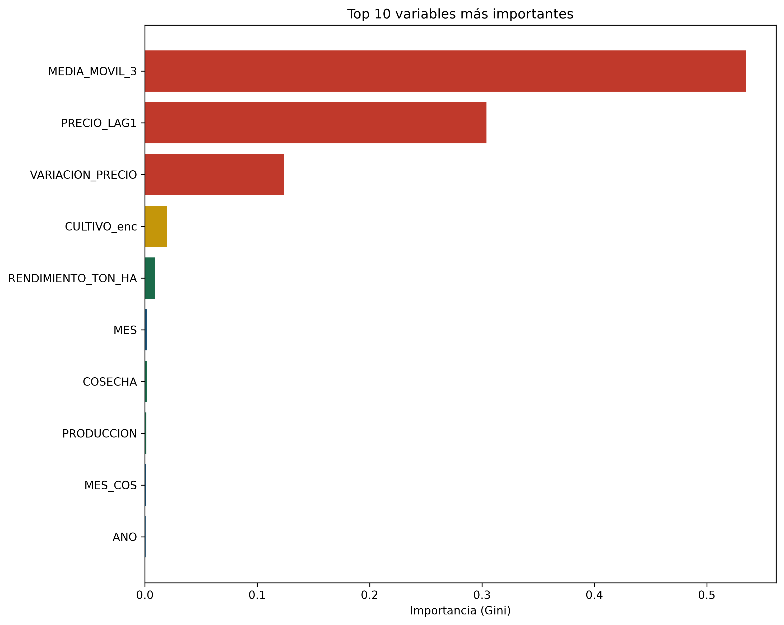

Comparación de Modelos (Objetivo General) — Tabla 4.1
Ablation Study por Dimensión (H1–H4) — Tabla 4.4
Gráficos generados por el pipeline (MLflow)
Estas figuras las genera backend/main.py y quedan registradas en MLflow.
Para verlas en alta resolución y descargarlas para tu tesis:
mlflow ui --backend-store-uri backend/mlruns → abre http://localhost:5000 →
entra a cada run → pestaña Artifacts.


